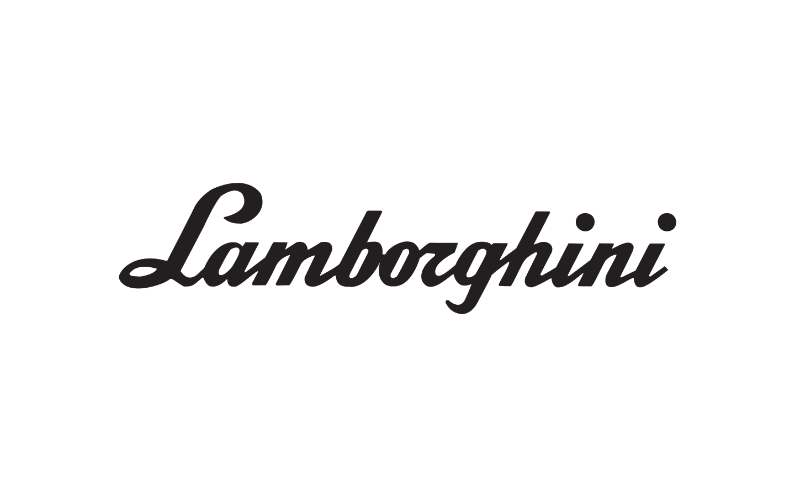
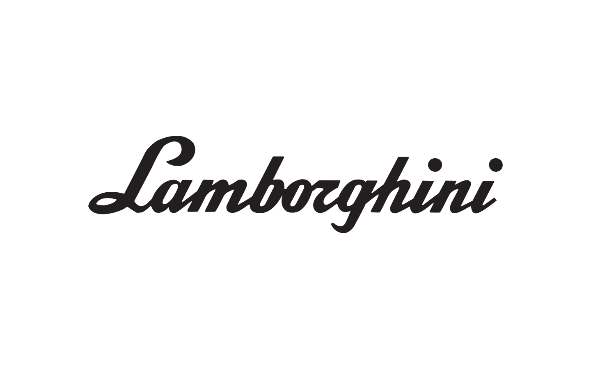
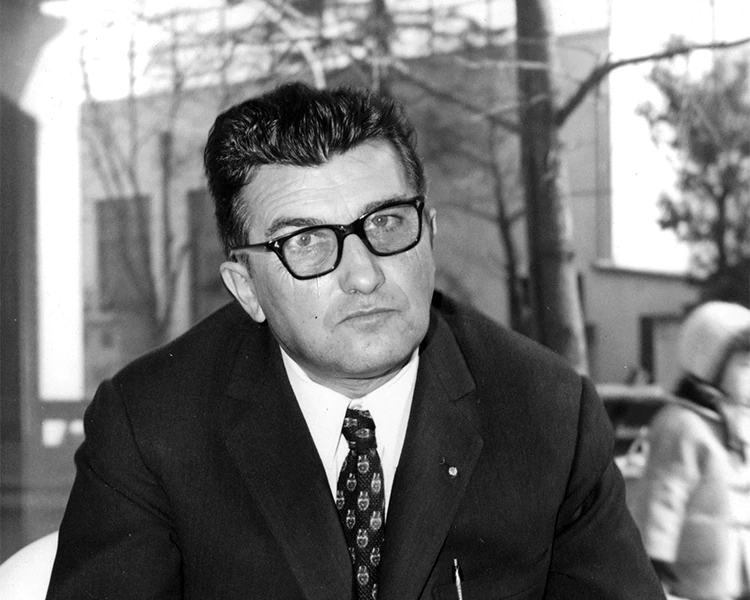

Lamborghini fue fundada en 1963 por Ferruccio Lamborghini, un empresario italiano y fabricante de tractores.
Con el objetivo de competir en el mercado de automóviles deportivos de lujo, Lamborghini se destacó por su enfoque en el rendimiento y su diseño distintivo. A lo largo de los años, la marca ha lanzado varios modelos icónicos que se han convertido en símbolos de lujo y velocidad.
Con su ingeniería innovadora y su compromiso con la excelencia, Lamborghini ha dejado una huella significativa en la industria automotriz y continúa siendo reconocida como una de las marcas más prestigiosas y deseadas del mundo.

FERRUCCIO LAMBORGHINI
(1916-1993)
Algunos de los modelos mas conocidos
LUGAR DE FUNDACION Y MUSEO
HISTORIA DE BOLONIA
Bolonia, Italia, es una encantadora ciudad conocida por su rica historia, arquitectura medieval y su prestigiosa universidad. Fundada en el siglo VI a.C., Bolonia ha sido un importante centro cultural y académico durante siglos.
Además, es famosa por ser la ciudad de origen de la icónica marca de automóviles Lamborghini, fundada en 1963 por Ferruccio Lamborghini. En Bolonia, los visitantes pueden explorar sus hermosas plazas, como la Piazza Maggiore, y maravillarse con su arquitectura medieval, como las Dos Torres. La ciudad también es conocida por su gastronomía, con deliciosos platos tradicionales como las pastas a la boloñesa y las mortadelas. Bolonia es un destino fascinante que combina historia, cultura y una vibrante vida moderna.